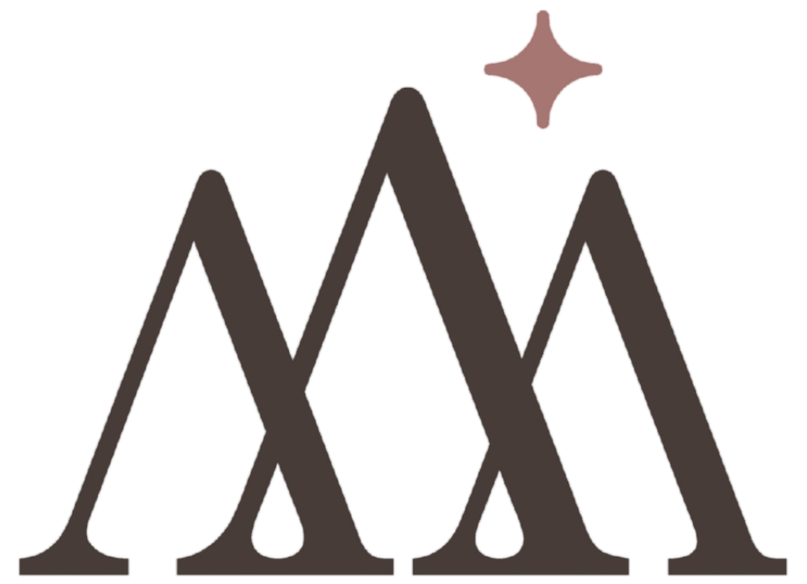
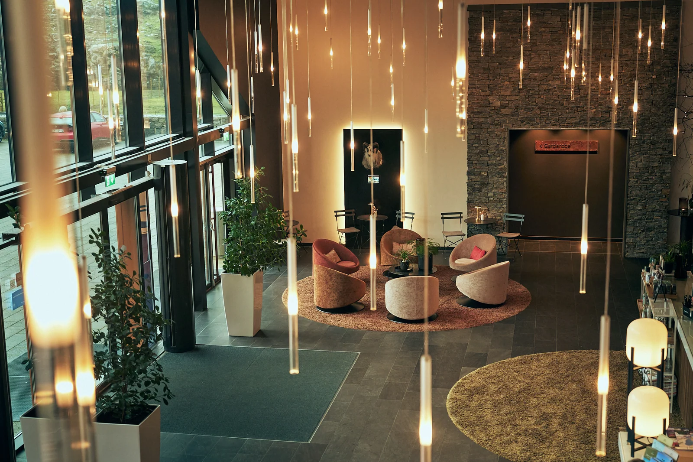
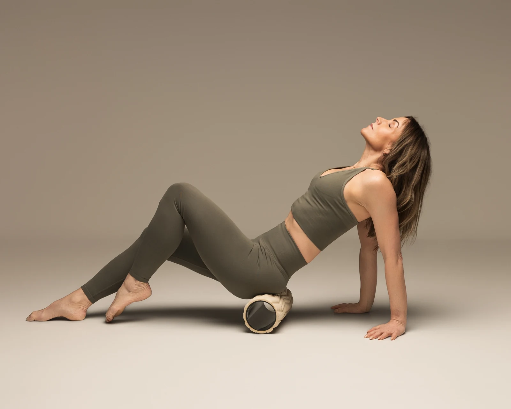
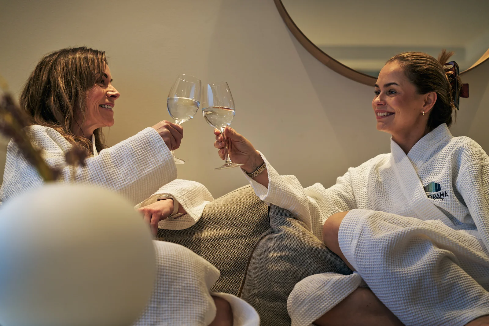
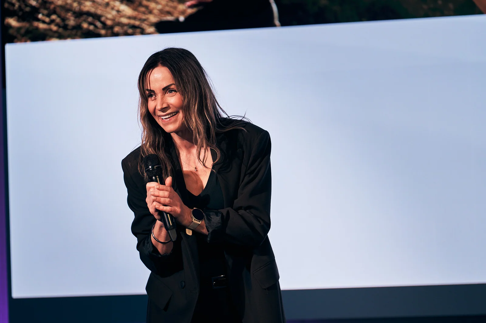
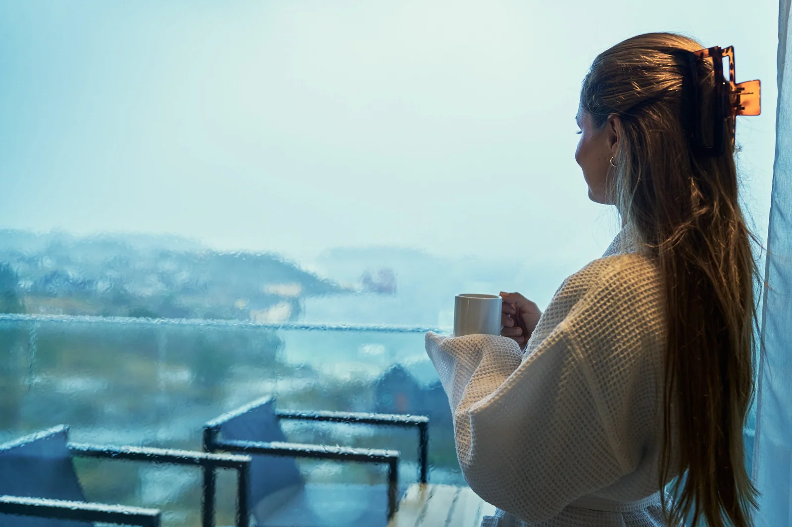
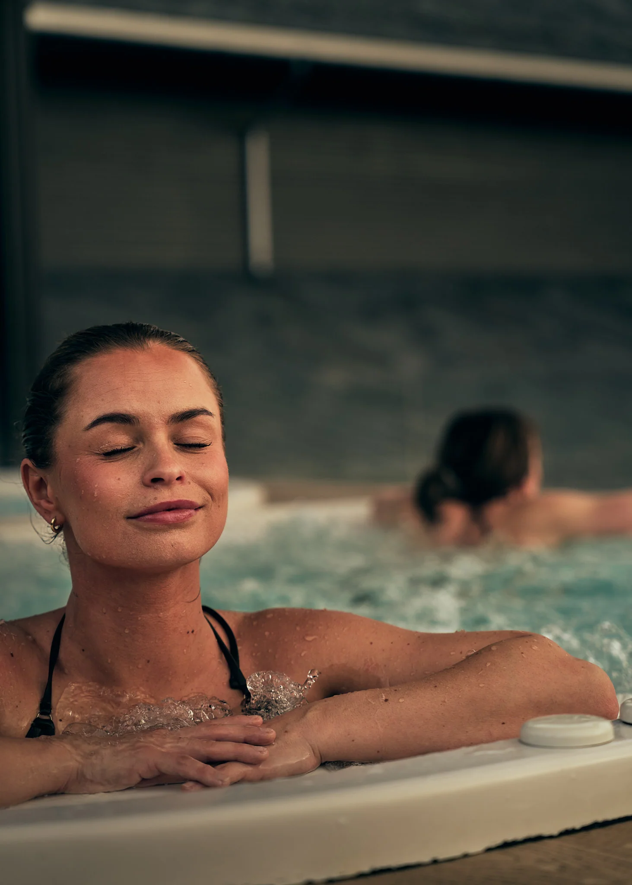

Faglig innsikt
Perspektiver på kvinnekroppen, livsfaser og forholdet mellom energi, belastning og restitusjon.
Movementum Retreat
En helg for kvinner med kunnskap om kvinnekroppen, bevegelse, restitusjon og nye møter – med rom for både aktivitet og gode samtaler.
Utforsk helgenHvorfor denne helgen?
Mellom jobb, familie, forventninger og egne ambisjoner er det lett å sette seg selv sist. Samtidig kan det være vanskelig å vite hvordan kvinnekroppen påvirkes av ulike livsfaser, belastning, aktivitet og restitusjon.
Movementum Retreat er tenkt som en helg med både faglige perspektiver, bevegelse og fellesskap. Et sted å stille spørsmål, møte andre og utforske hva som gir deg retning i hverdagen.


Dette er tanken bak helgen
Movementum kombinerer innsikt og aktivitet med gode møter. Det endelige innholdet og hvem som bidrar faglig, bekreftes før påmeldingen åpner.
Perspektiver på kvinnekroppen, livsfaser og forholdet mellom energi, belastning og restitusjon.
Fysisk aktivitet og trening er en del av konseptet. Format, nivå og eventuell tilrettelegging avklares.
Tid til samtaler og nye bekjentskap, også for deg som ønsker å komme alene.
Plass til å hente seg inn og reflektere, ved siden av kunnskap og bevegelse.

Kvinnehelse i fokus
Behov, kapasitet og erfaringer kan endre seg gjennom livet. Denne helgen skal rette oppmerksomheten mot spørsmål om hormoner, bevegelse, belastning og restitusjon, uten en oppskrift som skal passe alle.
Hensikten er å åpne for kunnskap, refleksjon og gode spørsmål. Konkrete foredrag, fagpersoner og aktiviteter publiseres når de er bekreftet.
Temaene er foreløpige. Arrangementet erstatter ikke individuell medisinsk rådgivning.
Temaer som vurderes for helgen
Hvordan kroppslige erfaringer og behov kan variere gjennom livet.
Å forstå samspillet mellom aktivitet, hverdagens krav og kapasitet.
Rom for ulike utgangspunkt, erfaringer og spørsmål rundt fysisk aktivitet.
Hva hvile og pauser kan bety i en aktiv hverdag.
Det er plass til både styrke og ro.

Fellesskap
Du trenger ikke å reise sammen med noen. Helgen legger opp til å møte andre kvinner gjennom felles opplevelser, måltider og samtaler.
Det skal være rom for både dem som liker å dele, og dem som vil lytte.
Les praktisk informasjonBak Movementum
Nora er grunnleggeren av Movementum. Gjennom merkevaren ønsker hun å knytte sammen mindset, bevegelse og utvikling over tid.
Et rom for å være nysgjerrig på egen utvikling – og finne sammenhengen mellom tanke, bevegelse og hverdagsliv.
Noras rolle under helgen og eventuelle inviterte fagpersoner presenteres når programmet er bekreftet.

Programoversikt · 16.–17. januar
Her vil du finne det endelige programmet, tidspunkt og fagpersoner når disse er bekreftet. Nedenfor ser du rammen som er under planlegging – ikke et fastlagt tidsskjema.
Se praktiske detaljerKunnskap om kvinnekroppen, bevegelse og fellesskap er sentrale deler av konseptet. Den konkrete rekkefølgen og innholdet er under avklaring.
Felles middag lørdag er omtalt i planleggingen, men gjennomføring og hva som er inkludert må bekreftes.
Aktiviteter, faglig innhold og tidspunkt for avslutning publiseres når programmet er fastsatt.
Programmet kan justeres frem til endelig bekreftelse.
Praktisk informasjon
Her er det viktigste samlet. Program, pris og påmelding deles når detaljene er bekreftet.
Se status for påmelding
Før påmelding åpner
Pris, opphold, måltider, program og nivå på aktivitetene publiseres når det er klart.
Ja. Fellesskap og nye møter er en del av tanken bak helgen.
Pris, overnatting, måltider og aktiviteter er ikke endelig avklart. Vi oppdaterer informasjonen før registreringen åpner.
Nivå og mulighet for tilrettelegging oppgis når aktivitetene er bekreftet.
En påmeldingslenke blir lagt til når arrangøren har bekreftet detaljene.
Movementum Retreat · Januar 2027
Påmeldingen er ikke åpnet ennå. Vi ferdigstiller program, pris, innhold og praktiske rammer før registrering kan starte.
Påmelding: avventer bekreftelse
Se hva som er avklartEn lenke til faktisk påmelding eller interesseskjema må legges inn når løsningen er klar. Ingen forespørsel sendes fra denne prototypen.
